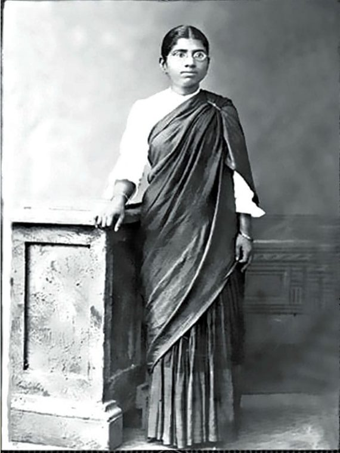

Muthulakshmi Reddy

30 July 1886-22 July 1968
Born: 30 July 1886,Thirukokarnam, Pudukkottai State, British India,(now in Pudukkottai District,Tamil Nadu, India)
Died: 22 July 1968 (aged 81),Madras (now Chennai),Tamil Nadu, india
Known for: Social Reformer, Women's Rights Activism and Writing
Spouse: Sundara Reddys
Children: S. Krishnamurthi,S. Rammohan
Relatives: Gemini Ganesan (nephew)
Awards: Padma Bhushan (1956)
Biography
Muthulakshmi Reddy
Most Indians today, when questioned, would not recognize the name of Dr. Muthulakshmi Reddi (1886-1968) – a reality that needs to be remedied as she is an important figure in Indian history, being the first Indian female legislator and the founder behind one of the biggest cancer institutes in India. Despite facing numerous challenges and hindrances being born as a woman in pre-independence India, in an era where there were little to none resources and opportunities for women, she went on to become a trailblazer in more than one field and pave the way for coming generations of women.
History
During the times of mid-19th century, the foundation of this event occurred.
The main goal of the movement was in the interests of the women.
This event wanted to provide women with a window for education and active community service which will also influence their belonging towards their own community.
Before the stones of this movement were laid down, most of the women of the mid-1800’s were in support of the men’s group.
Indeed everything comes with an exception and so this community. Not all women were an assistant to the church sponsored-aid societies.
They did an indeed excellent duty under the groups they were assigned with them but the only thing that was unacceptable was such organizations were under the sole control of men.
Political Career
Political career
This section does not cite any sources. Please help improve this section by adding citations to reliable sources. Unsourced material may be challenged and removed. (March 2020) (Learn how and when to remove this template message)
She was nominated by Sakthi Hari Haran to the Madras Legislature as a member of the legislative council in 1926 and became the first woman to be a member of any legislature in India. When she was elected as the deputy chairperson of the legislative council, she became the first woman in the world to become the vice president of a legislature. She was the prime mover behind the legislation that abolished the Devadasi system and played a keen role in raising the minimum marriage age for women in India. In 1930, she resigned from the Madras Legislature as a protest following the imprisonment of Mahatma Gandhi. She argued for the removal of the Devadasi system that was widely prevalent in Tamil Nadu at that time against stiff resistance from the Congress lobby led by Dheerar Sathyamoorthy, also from Pudhukkottai. She was the founder-president of the Women's Indian Association (WIA) and became the first alderwoman of the Madras Corporation.
Reddy was active in setting up of several toilets and women's toilets and initiated measures to improve the medical facilities given to slum dwellers. In 1930, she founded Avvai Illam
Adyar Cancer Institute
Adyar Cancer Institute
During her address at the Centenary celebration of 1935, she declared her desire to start a hospital for cancer patients. The foundation stone for Adyar Cancer Institute was laid by prime minister Jawaharlal Nehru in 1952. The hospital, which started functioning on 18 June 1954, was the second of its kind in India. Today it treats nearly 80,000 cancer patients a year.[17][18]
services to people the tamil lenguage
Services to the Tamil Language and people
She worked for the Tamil music movement, Tamil Language development and she protested to increase the salary of Tamil teachers and writers. She was the editor of the monthly magazine 'Sthree Dharumam' for women run by the Indian Women Association.
Awards amd books
Awards and books
Her book My Experience as a Legislator recounts her initiatives in respect of social reforms taken by her in the Madras Legislature.
Government of India conferred on her Padma Bhushan in 1956 in recognition of her meritorious services to the nation.[2]
Reddi inspired an award that is given to women who have given service in cancer prevention.[19]
Tribute
Tribute
On 30 July 2019, Google showed a Doodle celebrating what would have been her 133rd birthday.[20]
In 2022 a monograph was published, Muthulakshmi Reddy—A Trailblazer in Surgery and Women’s Rights written by VR Devika, emphasizing the contributions of this legendary medical practitioner, social reformer, and feminist to the development of Indian women.